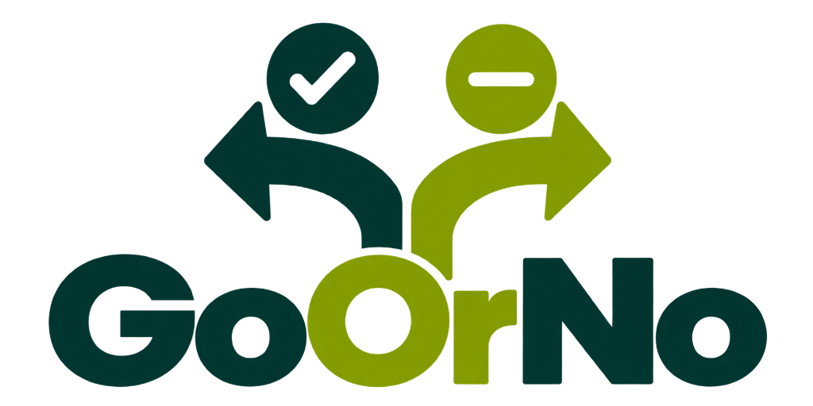
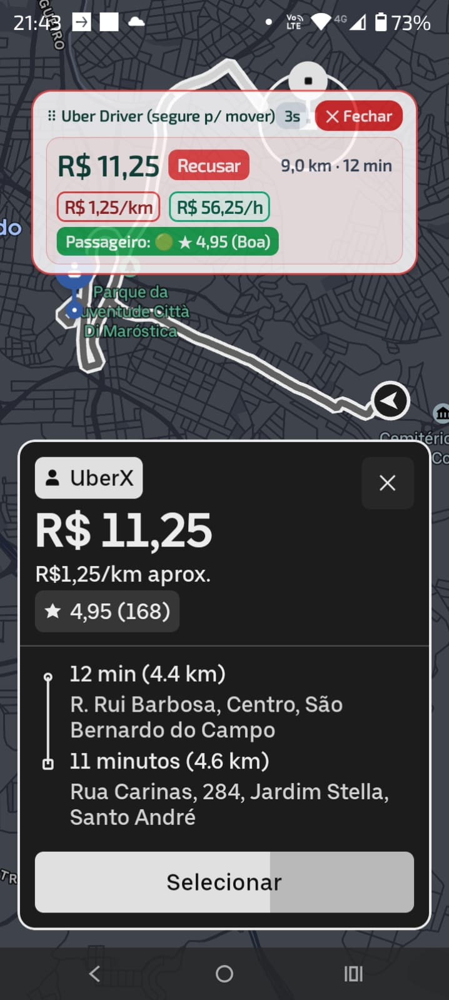
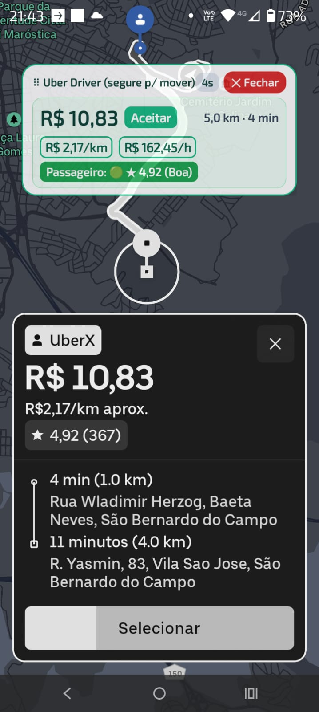

● VIAGEM BOA
R$ 2,17/km
Vale a pena aceitar
R$ 10,83 por 5 km totais. O GoOrNo aprova em verde.
ACEITAR ↗

GoOrNo v3.3.4O GoOrNo lê a tela da Uber e da 99 e mostra o valor real de cada chamada em menos de 1 segundo.
Antes de sair acelerando, saiba se a corrida paga o seu tempo, combustível e desgaste do carro.
R$ 10,83 por 5 km totais. O GoOrNo aprova em verde.
R$ 11,25 por 9 km totais. Não pague para trabalhar.
Veja o que realmente sobra por quilômetro e por hora trabalhada.
Verde para aceitar, amarelo para analisar e vermelho para recusar.
Confira a fachada do embarque e do destino antes de se deslocar.
Configure combustível e consumo para decidir com a sua realidade.
Interface simples, leitura rápida e sem distração enquanto você trabalha.


O GoOrNo é distribuído por APK oficial porque precisa aparecer sobre a Uber e a 99. Sem anúncios de terceiros e sem mensalidade para testar.
Baixar APK grátis ↓Toque no botão e confirme o download no Chrome.
Ative “Permitir desta fonte” quando o Android solicitar.
Informe seu WhatsApp e conceda as duas permissões.
Sim. Você tem 7 dias de teste grátis e não precisa cadastrar cartão de crédito.
O GoOrNo funciona como um copiloto visual no seu aparelho. Consulte sempre os termos atuais de cada plataforma.
O aviso é comum em APKs instalados fora da Play Store. Baixe sempre pelo botão oficial desta página.